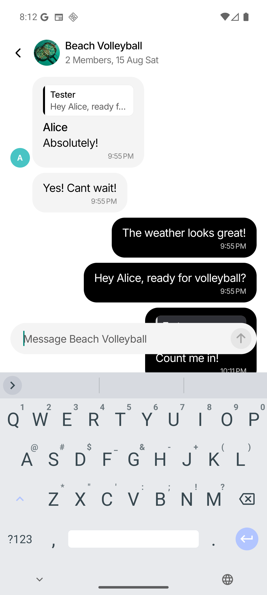
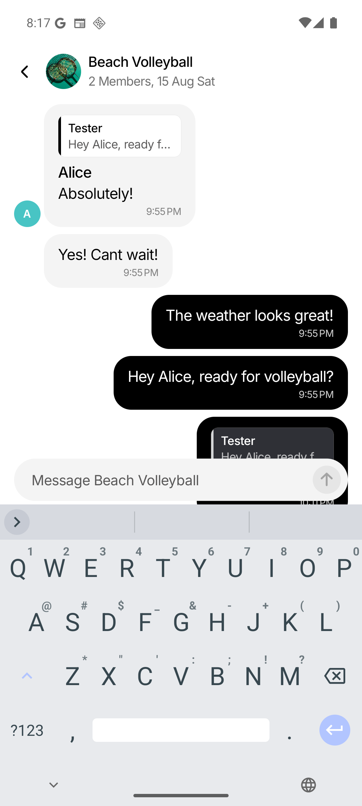
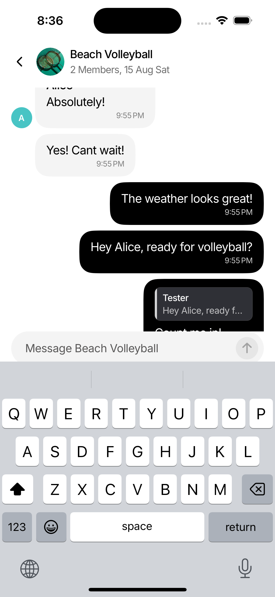
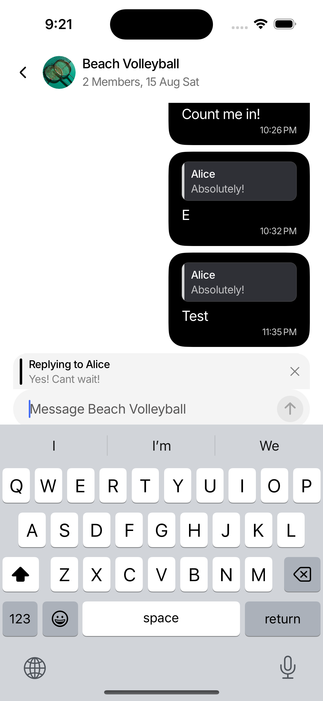

Root cause
The resting composer includes bottom navigation/safe-area padding. Android’s custom keyboard translation lifted that padding above the open keyboard, making it visible as an unintended gap.
Interaction QA · 30 July 2026
The oversized space was reproduced, traced to Android safe-area padding being translated above the IME, fixed in the Android-only composer path, and regression-tested on iOS.
The resting composer includes bottom navigation/safe-area padding. Android’s custom keyboard translation lifted that padding above the open keyboard, making it visible as an unintended gap.
The Android translation now subtracts the resting bottom padding before adding the intentional small keyboard breathing space. The reply preview and text box now move together inside the same keyboard dock.
The calculation lives only inside AndroidKeyboardComposer. The existing
iOS KeyboardAvoidingView behavior was not changed.
The composer pill sits noticeably above the keyboard accessory row.

Only the intended compact breathing space remains above the IME.

| Measurement (emulator pixels) | Before | After | Result |
|---|---|---|---|
| Keyboard top | 1502 px | 1502 px | Stable test baseline |
| Text input bottom | 1407 px | 1470 px | Moved 63 px closer |
| Input-to-keyboard distance | 95 px | 32 px | Unwanted safe-area gap removed |
The same conversation was opened on an iPhone 15 Pro simulator running iOS 17.4. Focusing the composer keeps it directly above the native keyboard without overlap or an added gap.

A reply was started from Alice’s message, then the text box was focused. The selected message preview remains directly above the composer while the keyboard is open on both platforms.
“Replying to Alice” stays visible immediately above the text box, with the compact composer-to-keyboard spacing preserved.

The selected Alice message, focused composer, and iOS keyboard remain stacked in the expected order without overlap.

ChatThreadScreen.rendering.test.tsx — 44 of 44 tests passed.
npm run typecheck — passed.Android screenshots use the same conversation and viewport before and after the code change. The iOS screenshots validate the unchanged native keyboard-avoidance branch.